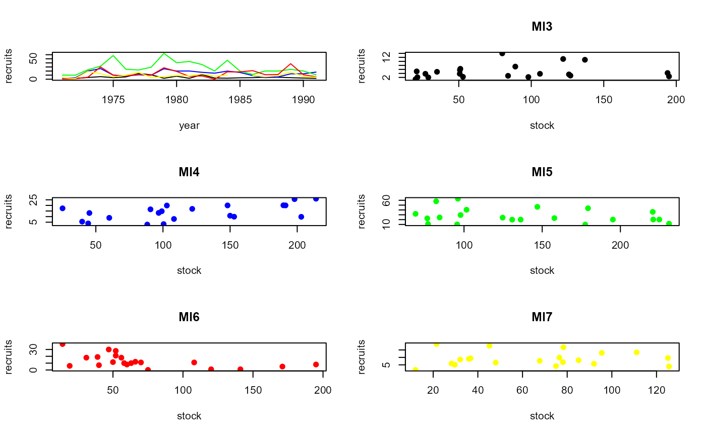

Stock and recruitment data for Lake Trout in Lake Superior, 1971-1991.
Source:R/LakeTroutMI.R
LakeTroutMI.RdStock and recruitment data for the 1971-1991 year-classes of Lake Trout (Salvelinus namaycush) in Michigan waters of Lake Superior.
Format
A data frame of 105 observations on the following 5 variables:
- year
Year of data
- recruits
Recuit index -- geometric mean number of age-7 fish/km/net-night
- wild
Wild fish spawning stock index -- geometric mean number of wild age-8 and older fish/km/net-night
- stocked
Stocked fish spawning stock index -- geometric mean number of stocked age-8 and older fish/km/net-night
- area
Lake Superior management unit
Source
From (approximately) figures in Richards, J.M., M.J. Hansen, C.R. Bronte, and S.P. Sitar. 2004. Recruitment dynamics of the 1971-1991 year-classes of Lake Trout in Michigan waters of Lake Superior. North American Journal of Fisheries Management. 24:475-489.
Examples
data(LakeTroutMI)
LakeTroutMI$stock <- LakeTroutMI$wild+LakeTroutMI$stocked
str(LakeTroutMI)
#> 'data.frame': 105 obs. of 6 variables:
#> $ year : int 1971 1972 1973 1974 1975 1976 1977 1978 1979 1980 ...
#> $ recruits: num 1.1 2.1 4.2 6.3 3.8 5.7 14 10.8 2.3 7.4 ...
#> $ wild : num 0.2 0.5 12 3.1 3.2 4.8 11 16 4.9 14 ...
#> $ stocked : num 20 21 182 48 47.5 46 69 121 48 75 ...
#> $ area : Factor w/ 5 levels "MI3","MI4","MI5",..: 1 1 1 1 1 1 1 1 1 1 ...
#> $ stock : num 20.2 21.5 194 51.1 50.7 50.8 80 137 52.9 89 ...
head(LakeTroutMI)
#> year recruits wild stocked area stock
#> 1 1971 1.1 0.2 20.0 MI3 20.2
#> 2 1972 2.1 0.5 21.0 MI3 21.5
#> 3 1973 4.2 12.0 182.0 MI3 194.0
#> 4 1974 6.3 3.1 48.0 MI3 51.1
#> 5 1975 3.8 3.2 47.5 MI3 50.7
#> 6 1976 5.7 4.8 46.0 MI3 50.8
op <- par(mfrow=c(3,2),pch=19)
plot(recruits~year,data=LakeTroutMI,subset=area=="MI3",type="l",ylim=c(0,max(recruits,na.rm=TRUE)))
lines(recruits~year,data=LakeTroutMI,subset=area=="MI4",col="blue")
lines(recruits~year,data=LakeTroutMI,subset=area=="MI5",col="green")
lines(recruits~year,data=LakeTroutMI,subset=area=="MI6",col="red")
lines(recruits~year,data=LakeTroutMI,subset=area=="MI7",col="yellow")
plot(recruits~stock,data=LakeTroutMI,subset=area=="MI3",main="MI3")
plot(recruits~stock,data=LakeTroutMI,subset=area=="MI4",col="blue",main="MI4")
plot(recruits~stock,data=LakeTroutMI,subset=area=="MI5",col="green",main="MI5")
plot(recruits~stock,data=LakeTroutMI,subset=area=="MI6",col="red",main="MI6")
plot(recruits~stock,data=LakeTroutMI,subset=area=="MI7",col="yellow",main="MI7")

par(op)